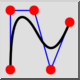
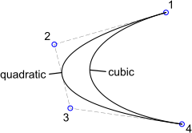
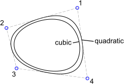

Spline (Kontrolné/Kotevné Body)
Panel s nástrojmi / ikona:


Ponuka: Kresliť > Spline > Spline (Kontrolné/Kotevné Body)
Skratka: S, P
Príkazy: spline | sp
Panel s nástrojmi / ikona:


Kreslí splajnové krivky z riadiacich bodov. Neuniformné racionálne B-splajny (NURBS) s homogénnymi váhovými faktormi sú jediné podporované splajny.

